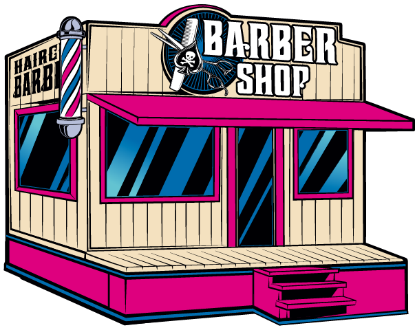
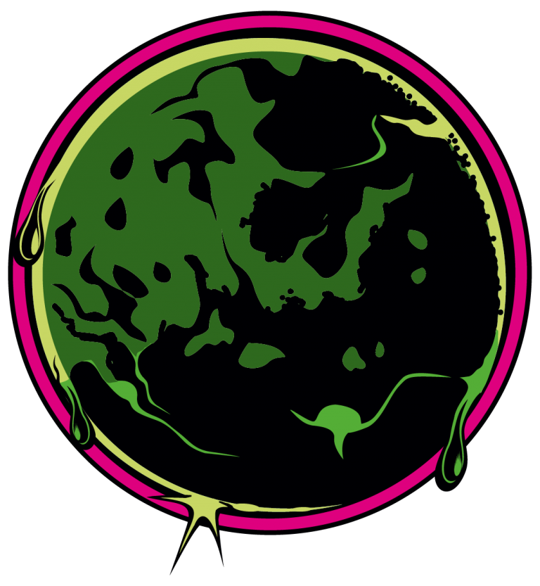

Що таке гріз культура, хто такий грізмен? Це великий всесвіт, що охоплює усі культурні прояви людини і ідеалізуючи його, наближає його того, до чого він прагнув усе своє усвідомлене життя, наближаючи до досконалості. Чому еволюція не відмовилася від рослинності на голові і на обличчі? Адже ми позбавилися абсолютно всієї шерсті зі свого тіла і з логічної точки зору, інша рослинність це зайве, навіщо вона нам? З нею ми унікальніші і різноманітніші! Жонглюючи образами, ми вносимо нову різноманітність у своє життя, поглиблюємо уявлення про себе, фокусуємо на собі увагу потрібних нам людей, передаємо більше емоцій і інформації навколишньому світу, розширюючи його і більше наповнюючи фарбами. Більше солі, більше цукру, ось і вигляд сучасного світу. І перш ніж ми відмовимося від гріз культури в її сучасному вигляді, ми повинні відмовитися від світу, що ми знаємо і увійти до нової епохи. І яким повинен стати грізмен майбутнього?

КУЛЬТУРА

ВИРОБНИЦТВО
Бренд Scissor Hands спеціалізується на виробництві чоловічих засобів для волосся і бороди. У нашому асортименті є найрізноманітніші засоби на будь-який смак. Усі продукти нашого бренду повністю унікальними і не дублюють один одного. Ми глибоко опрацьовуємо кожен елемент продукту, історію створення, прописування характеру, підбір аромату, текстури, його властивостей, упаковку, дизайн і нарешті анімацію і озвучення, яке розкриває і наповнює образ ще ширше, що дозволяє глибше зрозуміти продукт і насолодитися їм. В цілях підтримки місцевої економіки, ми робимо наш продукт доступним кожному, при цьому роблячи їх з високоякісних компонентів, які закуповуються в екологічно чистій країні. Також, в наших продуктах ми не використовуємо жири тваринного походження, що зводить наш бренд на більш високий культурний рівень. Для нас слово якість це не фігура мови, а частина життя. Косметика Scissor Hands розроблена і робиться на виробничих потужностях ZINENKO. Виробництво розташоване на Україні в місті Кременчук, яке відноситься до помірно континентального кліматичного пояса, з середньою температурою повітря від – 20 до +40. При виробництві косметики ми враховуємо усі чинники еко середовища і підлаштовуємо наші продукти під нього.